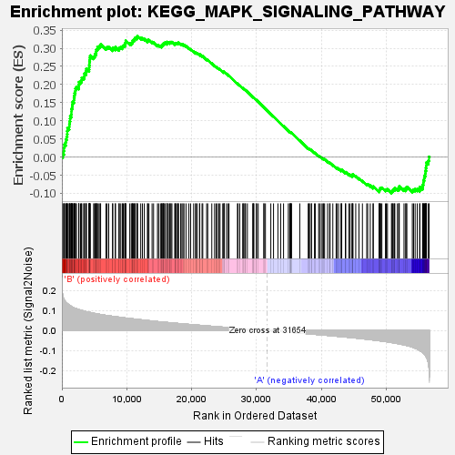
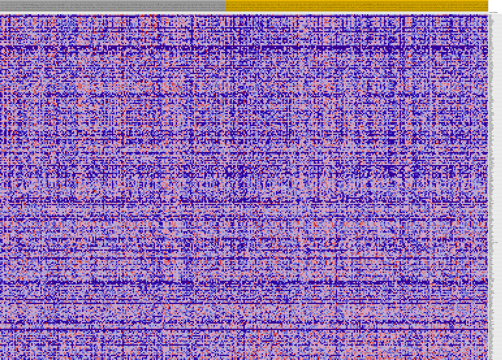
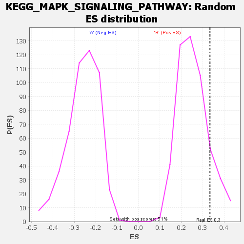

| | | Dataset | my.my.cls#B_versus_A.my.cls#B_versus_A_repos |
| Phenotype | my.cls#B_versus_A_repos |
| Upregulated in class | B |
| GeneSet | KEGG_MAPK_SIGNALING_PATHWAY |
| Enrichment Score (ES) | 0.33374718 |
| Normalized Enrichment Score (NES) | 1.3038048 |
| Nominal p-value | 0.1459566 |
| FDR q-value | 0.44564348 |
| FWER p-Value | 0.93 |
Table: GSEA Results Summary

Fig 1: Enrichment plot: KEGG_MAPK_SIGNALING_PATHWAY
Profile of the Running ES Score & Positions of GeneSet Members on the Rank Ordered List
| SYMBOL | TITLE | RANK IN GENE LIST | RANK METRIC SCORE | RUNNING ES | CORE ENRICHMENT | | 1 | ELK1 | na | 125 | 0.176 | 0.0092 | Yes |
| 2 | FGF3 | na | 293 | 0.158 | 0.0165 | Yes |
| 3 | NGF | na | 318 | 0.156 | 0.0262 | Yes |
| 4 | GNA12 | na | 380 | 0.152 | 0.0349 | Yes |
| 5 | MAP3K12 | na | 580 | 0.142 | 0.0406 | Yes |
| 6 | MAPK8IP1 | na | 615 | 0.141 | 0.0492 | Yes |
| 7 | MAP3K3 | na | 735 | 0.137 | 0.0560 | Yes |
| 8 | MAPK11 | na | 814 | 0.135 | 0.0633 | Yes |
| 9 | FGFR1 | na | 835 | 0.134 | 0.0717 | Yes |
| 10 | AKT2 | na | 864 | 0.133 | 0.0799 | Yes |
| 11 | FGF4 | na | 1124 | 0.127 | 0.0835 | Yes |
| 12 | PDGFB | na | 1154 | 0.126 | 0.0912 | Yes |
| 13 | MAPK12 | na | 1202 | 0.125 | 0.0985 | Yes |
| 14 | DUSP9 | na | 1266 | 0.124 | 0.1054 | Yes |
| 15 | TAB1 | na | 1288 | 0.124 | 0.1130 | Yes |
| 16 | TGFB2 | na | 1457 | 0.120 | 0.1178 | Yes |
| 17 | CDC25B | na | 1474 | 0.120 | 0.1253 | Yes |
| 18 | TGFB1 | na | 1477 | 0.120 | 0.1331 | Yes |
| 19 | FGF2 | na | 1589 | 0.118 | 0.1388 | Yes |
| 20 | NTRK2 | na | 1617 | 0.117 | 0.1459 | Yes |
| 21 | CRKL | na | 1679 | 0.116 | 0.1523 | Yes |
| 22 | TGFB3 | na | 1848 | 0.114 | 0.1567 | Yes |
| 23 | HSPA1L | na | 1862 | 0.113 | 0.1639 | Yes |
| 24 | IKBKG | na | 1935 | 0.112 | 0.1699 | Yes |
| 25 | FGF19 | na | 1959 | 0.112 | 0.1767 | Yes |
| 26 | PLA2G2A | na | 2072 | 0.110 | 0.1819 | Yes |
| 27 | PLA2G2E | na | 2082 | 0.110 | 0.1889 | Yes |
| 28 | FGF17 | na | 2251 | 0.108 | 0.1930 | Yes |
| 29 | MRAS | na | 2594 | 0.105 | 0.1937 | Yes |
| 30 | CACNA1E | na | 2607 | 0.104 | 0.2002 | Yes |
| 31 | FGF13 | na | 2621 | 0.104 | 0.2068 | Yes |
| 32 | RRAS | na | 2873 | 0.102 | 0.2089 | Yes |
| 33 | NFATC4 | na | 3033 | 0.100 | 0.2126 | Yes |
| 34 | ATF2 | na | 3052 | 0.100 | 0.2188 | Yes |
| 35 | FGFR2 | na | 3366 | 0.097 | 0.2195 | Yes |
| 36 | DAXX | na | 3470 | 0.096 | 0.2240 | Yes |
| 37 | PLA2G5 | na | 3476 | 0.096 | 0.2301 | Yes |
| 38 | TGFBR2 | na | 3709 | 0.095 | 0.2321 | Yes |
| 39 | MAP3K8 | na | 3732 | 0.094 | 0.2379 | Yes |
| 40 | PLA2G2D | na | 3780 | 0.094 | 0.2431 | Yes |
| 41 | PRKACA | na | 4181 | 0.091 | 0.2419 | Yes |
| 42 | CACNG5 | na | 4203 | 0.091 | 0.2475 | Yes |
| 43 | DDIT3 | na | 4214 | 0.091 | 0.2532 | Yes |
| 44 | BDNF | na | 4237 | 0.091 | 0.2587 | Yes |
| 45 | MAP4K2 | na | 4243 | 0.091 | 0.2645 | Yes |
| 46 | PLA2G2C | na | 4310 | 0.090 | 0.2692 | Yes |
| 47 | DUSP10 | na | 4331 | 0.090 | 0.2746 | Yes |
| 48 | MAP2K6 | na | 4362 | 0.090 | 0.2799 | Yes |
| 49 | CACNG4 | na | 4896 | 0.086 | 0.2761 | Yes |
| 50 | DUSP3 | na | 5034 | 0.085 | 0.2792 | Yes |
| 51 | RAP1B | na | 5087 | 0.085 | 0.2838 | Yes |
| 52 | FGF9 | na | 5255 | 0.084 | 0.2863 | Yes |
| 53 | MAPK1 | na | 5290 | 0.084 | 0.2911 | Yes |
| 54 | MAX | na | 5302 | 0.084 | 0.2964 | Yes |
| 55 | PRKX | na | 5463 | 0.083 | 0.2989 | Yes |
| 56 | PDGFRB | na | 5494 | 0.083 | 0.3037 | Yes |
| 57 | STK4 | na | 5726 | 0.081 | 0.3049 | Yes |
| 58 | CD14 | na | 5885 | 0.080 | 0.3073 | Yes |
| 59 | MAP3K7 | na | 5970 | 0.080 | 0.3110 | Yes |
| 60 | STMN1 | na | 6795 | 0.076 | 0.3013 | Yes |
| 61 | AKT3 | na | 6968 | 0.075 | 0.3031 | Yes |
| 62 | IL1A | na | 7221 | 0.074 | 0.3034 | Yes |
| 63 | FGF8 | na | 7808 | 0.071 | 0.2976 | Yes |
| 64 | CACNG7 | na | 7844 | 0.071 | 0.3016 | Yes |
| 65 | TAOK2 | na | 8234 | 0.069 | 0.2992 | Yes |
| 66 | RASGRF2 | na | 8247 | 0.069 | 0.3035 | Yes |
| 67 | CACNA2D1 | na | 8796 | 0.067 | 0.2981 | Yes |
| 68 | PRKACB | na | 8823 | 0.067 | 0.3019 | Yes |
| 69 | MAPT | na | 9007 | 0.066 | 0.3030 | Yes |
| 70 | TRAF2 | na | 9283 | 0.065 | 0.3023 | Yes |
| 71 | MAP3K1 | na | 9356 | 0.064 | 0.3052 | Yes |
| 72 | RAF1 | na | 9467 | 0.064 | 0.3074 | Yes |
| 73 | CACNB4 | na | 9690 | 0.063 | 0.3075 | Yes |
| 74 | PAK2 | na | 9709 | 0.063 | 0.3113 | Yes |
| 75 | FLNA | na | 9776 | 0.063 | 0.3142 | Yes |
| 76 | GADD45G | na | 9827 | 0.062 | 0.3173 | Yes |
| 77 | CACNA2D2 | na | 9847 | 0.062 | 0.3210 | Yes |
| 78 | RPS6KA3 | na | 10463 | 0.060 | 0.3140 | Yes |
| 79 | FGF1 | na | 10690 | 0.059 | 0.3138 | Yes |
| 80 | PDGFA | na | 10814 | 0.059 | 0.3155 | Yes |
| 81 | MAPK8 | na | 10898 | 0.058 | 0.3178 | Yes |
| 82 | CACNA1C | na | 10900 | 0.058 | 0.3216 | Yes |
| 83 | GRB2 | na | 11019 | 0.058 | 0.3232 | Yes |
| 84 | FGF10 | na | 11197 | 0.057 | 0.3238 | Yes |
| 85 | MAPK10 | na | 11212 | 0.057 | 0.3273 | Yes |
| 86 | CACNA1D | na | 11304 | 0.057 | 0.3293 | Yes |
| 87 | MAPK14 | na | 11555 | 0.056 | 0.3285 | Yes |
| 88 | GADD45B | na | 11577 | 0.056 | 0.3318 | Yes |
| 89 | PPP3CB | na | 11670 | 0.055 | 0.3337 | Yes |
| 90 | FGFR3 | na | 12150 | 0.054 | 0.3287 | No |
| 91 | FGF5 | na | 12406 | 0.053 | 0.3276 | No |
| 92 | IL1R1 | na | 12699 | 0.052 | 0.3258 | No |
| 93 | NTF4 | na | 13198 | 0.050 | 0.3202 | No |
| 94 | CACNA1H | na | 13221 | 0.050 | 0.3231 | No |
| 95 | STK3 | na | 13416 | 0.049 | 0.3228 | No |
| 96 | PRKCA | na | 13897 | 0.047 | 0.3174 | No |
| 97 | CACNA1B | na | 14128 | 0.047 | 0.3163 | No |
| 98 | NTRK1 | na | 14733 | 0.045 | 0.3085 | No |
| 99 | FGF7 | na | 14902 | 0.044 | 0.3084 | No |
| 100 | PTPN5 | na | 15188 | 0.043 | 0.3062 | No |
| 101 | MAP2K5 | na | 15385 | 0.043 | 0.3055 | No |
| 102 | NLK | na | 15396 | 0.043 | 0.3081 | No |
| 103 | RAC3 | na | 15440 | 0.043 | 0.3100 | No |
| 104 | RRAS2 | na | 15601 | 0.042 | 0.3099 | No |
| 105 | MAPK7 | na | 15637 | 0.042 | 0.3120 | No |
| 106 | PLA2G6 | na | 15674 | 0.042 | 0.3141 | No |
| 107 | FLNC | na | 15852 | 0.041 | 0.3137 | No |
| 108 | CACNB2 | na | 15882 | 0.041 | 0.3158 | No |
| 109 | ARRB2 | na | 16173 | 0.040 | 0.3133 | No |
| 110 | PAK1 | na | 16214 | 0.040 | 0.3152 | No |
| 111 | MAPK8IP2 | na | 16232 | 0.040 | 0.3175 | No |
| 112 | MAPKAPK2 | na | 16424 | 0.040 | 0.3167 | No |
| 113 | FGF16 | na | 16643 | 0.039 | 0.3153 | No |
| 114 | CACNB3 | na | 16679 | 0.039 | 0.3172 | No |
| 115 | CACNA2D3 | na | 16821 | 0.038 | 0.3172 | No |
| 116 | MAP2K1 | na | 16959 | 0.038 | 0.3173 | No |
| 117 | PLA2G12B | na | 17393 | 0.037 | 0.3120 | No |
| 118 | MAP4K1 | na | 17459 | 0.037 | 0.3132 | No |
| 119 | PRKACG | na | 17521 | 0.036 | 0.3145 | No |
| 120 | FGF14 | na | 17657 | 0.036 | 0.3144 | No |
| 121 | SRF | na | 17829 | 0.036 | 0.3137 | No |
| 122 | CACNA1F | na | 17927 | 0.035 | 0.3143 | No |
| 123 | FGF6 | na | 17964 | 0.035 | 0.3159 | No |
| 124 | FASLG | na | 18302 | 0.034 | 0.3121 | No |
| 125 | PTPN7 | na | 18494 | 0.034 | 0.3109 | No |
| 126 | CACNG1 | na | 18657 | 0.033 | 0.3102 | No |
| 127 | PPP3CC | na | 18816 | 0.033 | 0.3095 | No |
| 128 | GADD45A | na | 19125 | 0.032 | 0.3061 | No |
| 129 | TGFBR1 | na | 19572 | 0.031 | 0.3002 | No |
| 130 | FAS | na | 19843 | 0.030 | 0.2974 | No |
| 131 | MEF2C | na | 20300 | 0.029 | 0.2912 | No |
| 132 | PDGFRA | na | 20618 | 0.028 | 0.2873 | No |
| 133 | RASGRP4 | na | 20621 | 0.028 | 0.2891 | No |
| 134 | CHUK | na | 20857 | 0.027 | 0.2867 | No |
| 135 | MAP3K14 | na | 21227 | 0.026 | 0.2819 | No |
| 136 | MAP4K4 | na | 21228 | 0.026 | 0.2836 | No |
| 137 | FGFR4 | na | 21598 | 0.025 | 0.2787 | No |
| 138 | HSPA2 | na | 21710 | 0.025 | 0.2783 | No |
| 139 | DUSP14 | na | 22306 | 0.023 | 0.2693 | No |
| 140 | RAC2 | na | 22472 | 0.023 | 0.2678 | No |
| 141 | TP53 | na | 23100 | 0.021 | 0.2581 | No |
| 142 | PRKCG | na | 23529 | 0.020 | 0.2518 | No |
| 143 | DUSP5 | na | 23769 | 0.020 | 0.2488 | No |
| 144 | CACNA1I | na | 23968 | 0.019 | 0.2466 | No |
| 145 | MOS | na | 24207 | 0.018 | 0.2435 | No |
| 146 | TNFRSF1A | na | 24369 | 0.018 | 0.2418 | No |
| 147 | FGF23 | na | 24786 | 0.017 | 0.2356 | No |
| 148 | MKNK2 | na | 24947 | 0.017 | 0.2338 | No |
| 149 | FGF18 | na | 24993 | 0.017 | 0.2341 | No |
| 150 | MAP2K7 | na | 24994 | 0.016 | 0.2351 | No |
| 151 | RELA | na | 25360 | 0.016 | 0.2297 | No |
| 152 | SOS1 | na | 25614 | 0.015 | 0.2262 | No |
| 153 | HSPB1 | na | 25754 | 0.015 | 0.2246 | No |
| 154 | MAP2K2 | na | 27050 | 0.011 | 0.2024 | No |
| 155 | FGF11 | na | 27146 | 0.011 | 0.2014 | No |
| 156 | IL1B | na | 27408 | 0.010 | 0.1975 | No |
| 157 | ATF4 | na | 27875 | 0.009 | 0.1898 | No |
| 158 | RASGRF1 | na | 27924 | 0.009 | 0.1895 | No |
| 159 | RPS6KA6 | na | 28043 | 0.009 | 0.1880 | No |
| 160 | PPP5C | na | 28213 | 0.008 | 0.1855 | No |
| 161 | TAOK1 | na | 28299 | 0.008 | 0.1846 | No |
| 162 | NF1 | na | 28583 | 0.008 | 0.1800 | No |
| 163 | RAPGEF2 | na | 29440 | 0.005 | 0.1652 | No |
| 164 | PPP3R1 | na | 29444 | 0.005 | 0.1655 | No |
| 165 | EGFR | na | 29493 | 0.005 | 0.1650 | No |
| 166 | CDC42 | na | 29589 | 0.005 | 0.1636 | No |
| 167 | DUSP1 | na | 29972 | 0.004 | 0.1571 | No |
| 168 | RASGRP1 | na | 29989 | 0.004 | 0.1571 | No |
| 169 | BRAF | na | 30251 | 0.003 | 0.1527 | No |
| 170 | HRAS | na | 31126 | 0.001 | 0.1372 | No |
| 171 | MAP3K4 | na | 31132 | 0.001 | 0.1372 | No |
| 172 | MAP3K11 | na | 31365 | 0.001 | 0.1332 | No |
| 173 | FGF21 | na | 32194 | -0.001 | 0.1186 | No |
| 174 | CACNA1S | na | 32612 | -0.002 | 0.1113 | No |
| 175 | FGF22 | na | 33286 | -0.004 | 0.0996 | No |
| 176 | JMJD7-PLA2G4B | na | 33713 | -0.005 | 0.0924 | No |
| 177 | RASGRP3 | na | 34156 | -0.006 | 0.0849 | No |
| 178 | PRKCB | na | 34892 | -0.008 | 0.0724 | No |
| 179 | PTPRR | na | 35099 | -0.009 | 0.0693 | No |
| 180 | NFATC2 | na | 35158 | -0.009 | 0.0689 | No |
| 181 | DUSP16 | na | 35228 | -0.009 | 0.0682 | No |
| 182 | PLA2G2F | na | 35280 | -0.009 | 0.0679 | No |
| 183 | PLA2G4A | na | 35333 | -0.009 | 0.0675 | No |
| 184 | PPM1A | na | 35376 | -0.009 | 0.0674 | No |
| 185 | MAPK13 | na | 36654 | -0.012 | 0.0455 | No |
| 186 | RAP1A | na | 37957 | -0.016 | 0.0235 | No |
| 187 | TAB2 | na | 38084 | -0.016 | 0.0223 | No |
| 188 | CACNG6 | na | 38151 | -0.016 | 0.0222 | No |
| 189 | KRAS | na | 38448 | -0.017 | 0.0180 | No |
| 190 | IKBKB | na | 38457 | -0.017 | 0.0190 | No |
| 191 | ELK4 | na | 38921 | -0.018 | 0.0120 | No |
| 192 | RASA2 | na | 39063 | -0.019 | 0.0107 | No |
| 193 | RASGRP2 | na | 39568 | -0.020 | 0.0031 | No |
| 194 | RAC1 | na | 39710 | -0.021 | 0.0019 | No |
| 195 | DUSP6 | na | 39979 | -0.021 | -0.0015 | No |
| 196 | TRAF6 | na | 40214 | -0.022 | -0.0042 | No |
| 197 | PPP3R2 | na | 40324 | -0.022 | -0.0047 | No |
| 198 | RELB | na | 40481 | -0.023 | -0.0060 | No |
| 199 | PPM1B | na | 40939 | -0.024 | -0.0125 | No |
| 200 | PLA2G12A | na | 41246 | -0.025 | -0.0164 | No |
| 201 | ARRB1 | na | 41322 | -0.025 | -0.0161 | No |
| 202 | FGF12 | na | 41748 | -0.026 | -0.0219 | No |
| 203 | NFKB2 | na | 42258 | -0.028 | -0.0292 | No |
| 204 | MAPK8IP3 | na | 42381 | -0.028 | -0.0295 | No |
| 205 | PLA2G4B | na | 42634 | -0.029 | -0.0321 | No |
| 206 | PLA2G4E | na | 43019 | -0.030 | -0.0370 | No |
| 207 | EGF | na | 43055 | -0.030 | -0.0356 | No |
| 208 | HSPA6 | na | 43123 | -0.030 | -0.0348 | No |
| 209 | MAP3K6 | na | 43677 | -0.032 | -0.0426 | No |
| 210 | CACNG2 | na | 43743 | -0.032 | -0.0416 | No |
| 211 | RASA1 | na | 44207 | -0.034 | -0.0477 | No |
| 212 | MYC | na | 44399 | -0.034 | -0.0488 | No |
| 213 | CACNA1A | na | 44724 | -0.035 | -0.0523 | No |
| 214 | RPS6KA5 | na | 44740 | -0.035 | -0.0503 | No |
| 215 | CACNA2D4 | na | 44758 | -0.035 | -0.0483 | No |
| 216 | NRAS | na | 44857 | -0.036 | -0.0477 | No |
| 217 | NTF3 | na | 45279 | -0.037 | -0.0528 | No |
| 218 | HSPA1B | na | 45776 | -0.039 | -0.0591 | No |
| 219 | MAP3K2 | na | 46309 | -0.041 | -0.0659 | No |
| 220 | FGF20 | na | 46975 | -0.043 | -0.0749 | No |
| 221 | DUSP7 | na | 47120 | -0.044 | -0.0746 | No |
| 222 | MAPK3 | na | 47515 | -0.045 | -0.0787 | No |
| 223 | CACNG3 | na | 47945 | -0.047 | -0.0833 | No |
| 224 | MKNK1 | na | 47986 | -0.047 | -0.0810 | No |
| 225 | MAPK9 | na | 48865 | -0.050 | -0.0933 | No |
| 226 | JUN | na | 48909 | -0.051 | -0.0908 | No |
| 227 | AKT1 | na | 48994 | -0.051 | -0.0890 | No |
| 228 | LAMTOR3 | na | 49034 | -0.051 | -0.0864 | No |
| 229 | PPP3CA | na | 49166 | -0.052 | -0.0853 | No |
| 230 | MAPKAPK5 | na | 49307 | -0.052 | -0.0844 | No |
| 231 | HSPA8 | na | 49860 | -0.055 | -0.0907 | No |
| 232 | SOS2 | na | 49991 | -0.055 | -0.0894 | No |
| 233 | HSPA1A | na | 50169 | -0.056 | -0.0889 | No |
| 234 | RPS6KA2 | na | 50785 | -0.059 | -0.0960 | No |
| 235 | MAP2K4 | na | 50882 | -0.060 | -0.0938 | No |
| 236 | TNF | na | 50996 | -0.060 | -0.0919 | No |
| 237 | CACNA1G | na | 51057 | -0.061 | -0.0890 | No |
| 238 | CHP2 | na | 51267 | -0.062 | -0.0887 | No |
| 239 | MAPKAPK3 | na | 51292 | -0.062 | -0.0851 | No |
| 240 | JUND | na | 51698 | -0.064 | -0.0881 | No |
| 241 | ECSIT | na | 51909 | -0.066 | -0.0876 | No |
| 242 | RPS6KA4 | na | 51941 | -0.066 | -0.0839 | No |
| 243 | PLA2G1B | na | 51987 | -0.066 | -0.0804 | No |
| 244 | NR4A1 | na | 52716 | -0.071 | -0.0887 | No |
| 245 | DUSP2 | na | 52993 | -0.073 | -0.0889 | No |
| 246 | TAOK3 | na | 53002 | -0.073 | -0.0842 | No |
| 247 | MAP3K13 | na | 53156 | -0.074 | -0.0821 | No |
| 248 | PLA2G10 | na | 53998 | -0.082 | -0.0917 | No |
| 249 | CACNB1 | na | 54190 | -0.084 | -0.0896 | No |
| 250 | DUSP4 | na | 54431 | -0.087 | -0.0882 | No |
| 251 | GNG12 | na | 54752 | -0.092 | -0.0880 | No |
| 252 | CACNG8 | na | 55142 | -0.099 | -0.0884 | No |
| 253 | CASP3 | na | 55148 | -0.099 | -0.0821 | No |
| 254 | FLNB | na | 55580 | -0.109 | -0.0827 | No |
| 255 | PLA2G3 | na | 55602 | -0.110 | -0.0759 | No |
| 256 | MAP2K3 | na | 55705 | -0.112 | -0.0704 | No |
| 257 | NFKB1 | na | 55714 | -0.113 | -0.0633 | No |
| 258 | MAP3K5 | na | 55842 | -0.116 | -0.0580 | No |
| 259 | FOS | na | 55867 | -0.117 | -0.0508 | No |
| 260 | MAP4K3 | na | 56006 | -0.123 | -0.0453 | No |
| 261 | RPS6KA1 | na | 56023 | -0.124 | -0.0375 | No |
| 262 | CRK | na | 56094 | -0.127 | -0.0305 | No |
| 263 | IL1R2 | na | 56146 | -0.130 | -0.0230 | No |
| 264 | DUSP8 | na | 56172 | -0.132 | -0.0149 | No |
| 265 | CHP1 | na | 56470 | -0.161 | -0.0097 | No |
| 266 | MECOM | na | 56577 | -0.190 | 0.0008 | No |
Table: GSEA details [plain text format]

Fig 2: KEGG_MAPK_SIGNALING_PATHWAY
Blue-Pink O' Gram in the Space of the Analyzed GeneSet

Fig 3: KEGG_MAPK_SIGNALING_PATHWAY: Random ES distribution
Gene set null distribution of ES for KEGG_MAPK_SIGNALING_PATHWAY